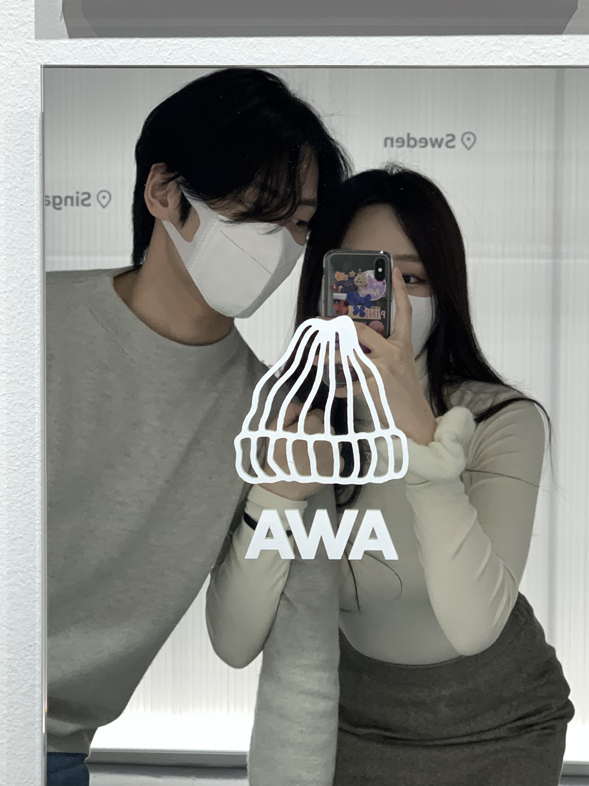
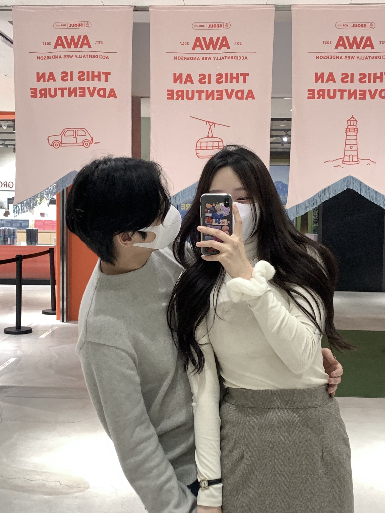

‘AWA 프로젝트’, ‘Acidentally Wes Anderson’의 줄임말입니다. 직역하면 우연히 마주친 웨스 앤더슨이란 뜻인데요. 여기서 웨스 앤더슨은 영화 ‘그랜드 부다 페스트 호텔’, ‘문라이즈 킹덤’ 등을 만든 감독을 지칭합니다.2017년 미국 브루클린에 거주 중인 월리와 아만다 코발(Wally & Amanda Koval) 부부는 여행 계획 버킷리스트를 구상하며 이 프로젝트를 시작했습니다. 이들은 현실 속에서 우연히 마주친 웨스 앤더슨 감독의 영화에 등장할 법한 장소를 포착하여 동명의 인스타그램에 업로드했죠. 마음이 편안해지는 대칭 구도, 시선을 끄는 강렬한 무늬, 알록달록 파스텔 색감이 더해진 이미지. ‘미장센의 대가’라고 불리는 웨스 앤더슨 감독의 ‘감성’은 전 세계인들의 마음을 관통했습니다. 재 AWA팀은 자신들이 직접 찍은 사진은 물론, ‘모험가’라고 칭하는 전 세계의 팔로워들로부터 제보받은 이미지를 피드에 올리며 적극적으로 소통하고 있습니다. 그렇다면 이들은 왜, 이와 같은 아카이빙을 하는 것일까요? ‘모험가’들이 흥미로운 장소를 큐레이팅 하고 공유하는 과정을 통해 호기심을 충족시키고, 영감을 받기를 바라는 마음 때문입니다. 호텔스닷컴, 프라다 등 글로벌 브랜드의 러브콜을 받고 있는 AWA의 국내 첫 전시 <우연히 웨스 앤더슨: 어디에 있든, 영감은 당신 눈앞에 있다>가 2022년 6월 6일까지 서울 그라운드시소 성수에서 진행됩니다. 총 300여 점의 작품들이 총 10개의 키워드에 따라 소개되는데요. 여느 사진전과 다른 점이 있다면 약 500여 평의 공간이 전 세계 모험가들과 여행을 떠나는 콘셉트로 기획됐다는 것입니다. “이제부터 우리는 함께 지구에서 가장 흥미로운, 영화 속 한 장면 같은 장소들을 탐험하게 될 거예요. 사진마다 예상치 못한 이야기가 담겨있죠. 이 여행이 여러분의 마음을 세계 곳곳에 데려다 놓고 약간의 지식과 영감, 그리고 미소를 선사하기를 바랍니다.” 또 AWA팀은 “지금 사는 동네, 여행지를 돌아다니면서도 ‘우연히 웨스트 앤더슨’의 작품과 같은 장면을 발견할 수 있을 것”이라고 전합니다. 단, 독특하고 유쾌한 시선으로 세상을 바라본다는 전제가 필요하지만요. 익숙한 주변 환경이 사실은 우리에게 가장 강력한 영감을 주는 원천임을 깨닫게 하는 이번 전시의 대표작을 맛보기로 둘러볼까요?개인적으로는 ‘The Terminal’이라는 섹션이 가장 기억에 남았습니다. 여러분은 ‘터미널(역)’ 하면 어떤 이미지가 연상되나요? 플랫폼에 발을 내딛는 순간 느껴지는 낯선 공기? 승하차에 바쁜 승객들의 발자국 소리? 여행 가방이 달그락거리며 뒤섞이는 풍경? 생소한 언어의 안내방송? AWA는 행선지 사이를 이어주는 역의 이미지를 담아 그 속에 숨은 이야기를 소개하는 것에 집중했습니다. 이들은 “일부 역들은 예술 운동에 영향을 끼치기도 했고, 지역 산업이 발전하는 중대한 역할을 하기도 했으며 정치적 분쟁으로 파괴되었다가 재건되기도 했습니다. 이들의 존재가 역사가 바뀌기도 했다”고 설명합니다. 동시에 우리가 매일 지나는 크고 작은 역에도 의외의 이야기가 담겨 있을 수 있다고 강조합니다.낯선 공간에서 새로운 경험을 하며 뜻밖의 시간들을 마주하는 것, 여행이 주는 기쁨일 겁니다. 그러나 그 기쁨이 꼭 뚜렷한 목적지를 두었을 때만 유효한 것은 아닐지도 모른다는 생각이 듭니다. 이번 전시를 통해 ‘세상을 보는 각도를 달리하면 일상의 장면도 특별해 보일 수 있다’는 말을 되새겨 보길 바랍니다. 어디에 있든, 영감은 우리 눈앞에 있을지도 모른다는 기대와 함께 말이죠.
정가운데의 건축물들, 건물들. 여러가지 색감의 사진들. 유키는 이 전시회를 맘에 들어하는 듯 하였다. 이 날도 유키는 아름다웠다.